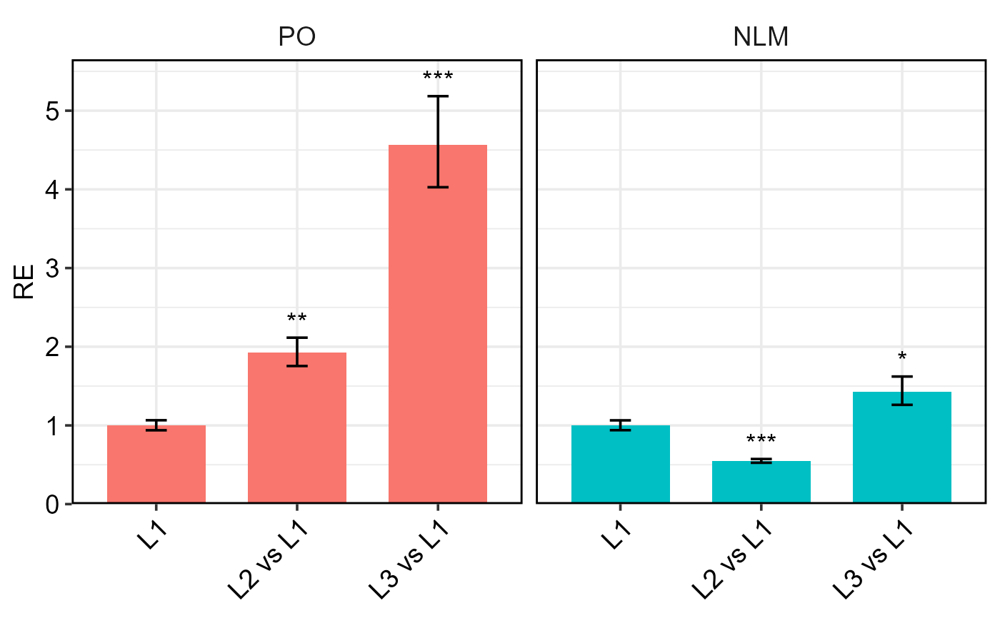
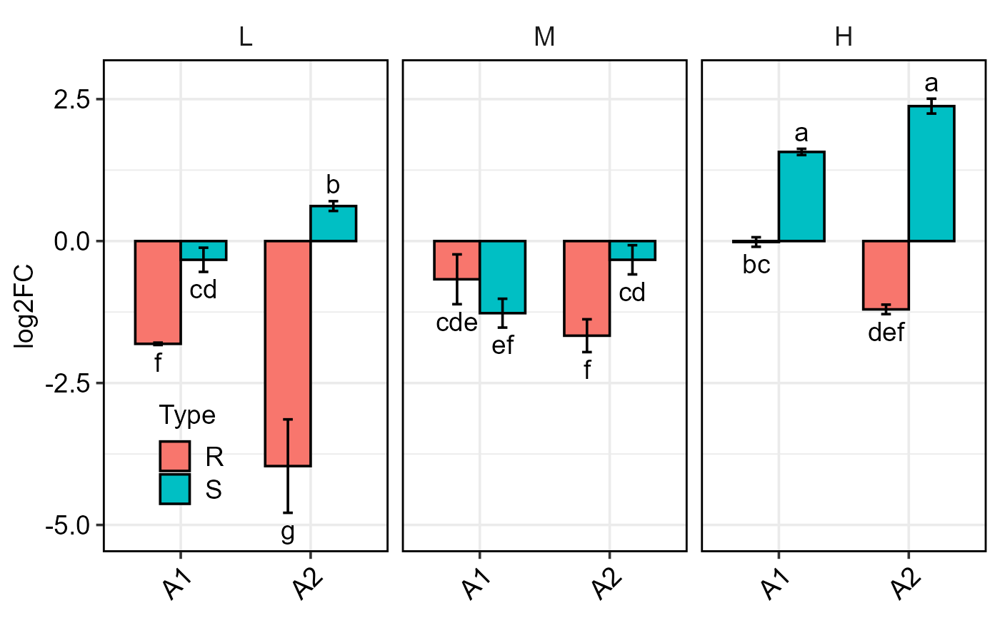

Bar plot of gene(s) expression for 1-, 2-, or 3-factor experiments
Source:R/plotFactor.R
plotFactor.RdCreates a bar plot of relative gene expression (fold change) values from 1-, 2-, or 3-factor experiments, including error bars and statistical significance annotations.
Usage
plotFactor(
data,
x_col,
y_col,
Lower.se_col,
Upper.se_col,
group_col = NULL,
facet_col = NULL,
letters_col = NULL,
letters_d = 0.2,
col_width = 0.8,
err_width = 0.15,
dodge_width = 0.8,
fill_colors = NULL,
color = "black",
alpha = 1,
base_size = 12,
legend_position = "right",
...
)Arguments
- data
Data frame containing expression results
- x_col
Character. Column name for x-axis
- y_col
Character. Column name for bar height
- Lower.se_col
Character. Column name for lower SE
- Upper.se_col
Character. Column name for upper SE
- group_col
Character. Column name for grouping bars (optional)
- facet_col
Character. Column name for faceting (optional)
- letters_col
Character. Column name for significance letters (optional)
- letters_d
Numeric. Vertical offset for letters (default
0.2)- col_width
Numeric. Width of bars (default
0.8)- err_width
Numeric. Width of error bars (default
0.15)- dodge_width
Numeric. Width of dodge for grouped bars (default
0.8)- fill_colors
Optional vector of fill colors to change the default colors
- color
Optional color for the bar outline
- alpha
Numeric. Transparency of bars (default
1)- base_size
Numeric. Base font size for theme (default
12)- legend_position
Character or numeric vector. Legend position (default
right)- ...
Additional ggplot2 layer arguments
Examples
data <- read.csv(system.file("extdata", "data_2factorBlock3ref.csv", package = "rtpcr"))
res <- ANOVA_DDCt(x = data,
numOfFactors = 2,
numberOfrefGenes = 3,
block = "block",
mainFactor.column = 2,
p.adj = "none")
#>
#> Relative Expression
#> gene contrast ddCt RE log2FC LCL UCL se Lower.se.RE
#> 1 PO L1 0.00000 1.00000 0.00000 0.00000 0.00000 0.00000 1.00000
#> 2 PO L2 vs L1 -0.94610 1.92666 0.94610 1.25860 2.94934 0.21785 1.65663
#> 3 PO L3 vs L1 -2.19198 4.56931 2.19198 3.08069 6.77724 0.32539 3.64669
#> 4 NLM L1 0.00000 1.00000 0.00000 0.00000 0.00000 0.00000 1.00000
#> 5 NLM L2 vs L1 0.86568 0.54879 -0.86568 0.39830 0.75614 0.98842 0.27661
#> 6 NLM L3 vs L1 -1.44341 2.71964 1.44341 1.94670 3.79946 0.93618 1.42132
#> Upper.se.RE Lower.se.log2FC Upper.se.log2FC pvalue sig
#> 1 1.00000 0.00000 0.00000 1.00000
#> 2 2.24072 0.81350 1.10032 0.00116 **
#> 3 5.72536 1.74938 2.74655 0.00000 ***
#> 4 1.00000 0.00000 0.00000 1.00000
#> 5 1.08880 -1.71751 -0.43633 0.00018 ***
#> 6 5.20391 0.75435 2.76191 0.00000 ***
#>
#> The L1 level was used as calibrator.
#> Note: Using default model for statistical analysis: wDCt ~ block + Concentration * Type
df <- res$relativeExpression
p1 <- plotFactor(
data = df,
x_col = "contrast",
y_col = "RE",
group_col = "gene",
facet_col = "gene",
Lower.se_col = "Lower.se.RE",
Upper.se_col = "Upper.se.RE",
letters_col = "sig",
letters_d = 0.2,
alpha = 1,
col_width = 0.7,
dodge_width = 0.7,
base_size = 14,
legend_position = "none")
p1

data2 <- read.csv(system.file("extdata", "data_3factor.csv", package = "rtpcr"))
#Perform analysis first
res <- ANOVA_DCt(
data2,
numOfFactors = 3,
numberOfrefGenes = 1,
block = NULL)
#>
#> Relative Expression
#>
#> gene Type Conc SA dCt RE log2FC LCL UCL se
#> 1 PO R L A1 1.81000 0.28519 -1.81000 0.18241 0.44589 0.02082
#> 2 PO S L A1 0.33000 0.79554 -0.33000 0.50883 1.24380 0.21284
#> 3 PO R M A1 0.67333 0.62706 -0.67333 0.40107 0.98039 0.43880
#> 4 PO S M A1 1.27000 0.41466 -1.27000 0.26522 0.64831 0.25403
#> 5 PO R H A1 0.01667 0.98851 -0.01667 0.63225 1.54552 0.08413
#> 6 PO S H A1 -1.57000 2.96905 1.57000 1.89900 4.64204 0.05508
#> 7 PO R L A2 3.96333 0.06411 -3.96333 0.04100 0.10023 0.82277
#> 8 PO S L A2 -0.61667 1.53333 0.61667 0.98072 2.39732 0.08647
#> 9 PO R M A2 1.66667 0.31498 -1.66667 0.20146 0.49246 0.28898
#> 10 PO S M A2 0.33000 0.79554 -0.33000 0.50883 1.24380 0.25710
#> 11 PO R H A2 -0.79667 1.73708 0.79667 1.11104 2.71589 0.08373
#> 12 PO S H A2 -2.37667 5.19335 2.37667 3.32167 8.11969 0.13094
#> Lower.se.RE Upper.se.RE Upper.se.log2FC Lower.se.log2FC sig
#> 1 0.28111 0.28934 -1.78407 -1.83631 a
#> 2 0.68642 0.92200 -0.28474 -0.38246 ab
#> 3 0.46261 0.84996 -0.49675 -0.91269 bc
#> 4 0.34771 0.49450 -1.06496 -1.51452 c
#> 5 0.93252 1.04787 -0.01572 -0.01767 cd
#> 6 2.85784 3.08458 1.63109 1.51119 d
#> 7 0.03624 0.11340 -2.24070 -7.01032 d
#> 8 1.44412 1.62805 0.65476 0.58079 de
#> 9 0.25780 0.38484 -1.36413 -2.03630 ef
#> 10 0.66568 0.95072 -0.27613 -0.39437 f
#> 11 1.63913 1.84088 0.84427 0.75175 f
#> 12 4.74277 5.68675 2.60246 2.17046 g
#>
#> Note: Using default model for statistical analysis: wDCt ~ Type * Conc * SA
df <- res$relativeExpression
# Generate three-factor bar plot
p <- plotFactor(
df,
x_col = "SA",
y_col = "log2FC",
group_col = "Type",
facet_col = "Conc",
Lower.se_col = "Lower.se.log2FC",
Upper.se_col = "Upper.se.log2FC",
letters_col = "sig",
letters_d = 0.3,
col_width = 0.7,
dodge_width = 0.7,
#fill_colors = c("blue", "brown"),
color = "black",
base_size = 14,
alpha = 1,
legend_position = c(0.1, 0.2))
p
